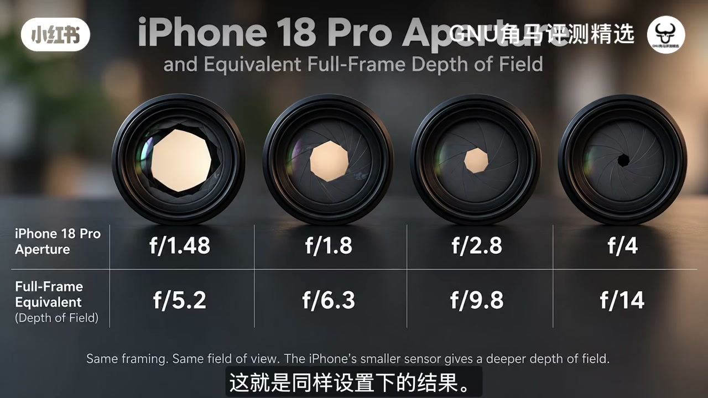
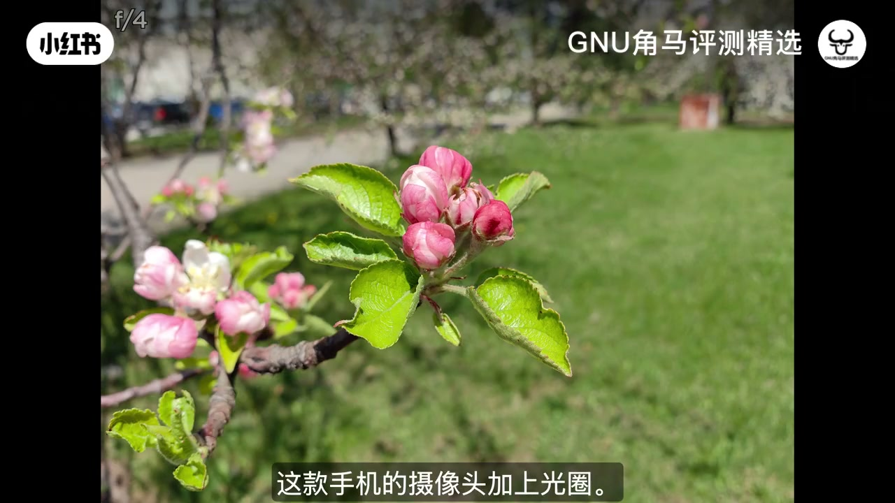

内容要点
知识结构
背面主摄装了实体光圈叶片；作者强调自己做了大量研究才想通——很多人第一反应是虚化或合影景深，但他先把这两条常见解释拆掉。
苹果长期用计算摄影做「假虚化」；网上说合影需要可变光圈才能前后都清晰，但手机传感器极小，同样构图下景深天然更深——片中给出 f/1.48≈全画幅 f/5.2 一类等效对照。
光圈决定进光；开大可少做数字放大，降低噪点与颗粒感。相对以往约 f/1.78 固定光圈，开到约 f/1.48 可多吸收大约一半光线；也能收到更小挡位，在光学更干净的区间工作。
作者预测多数人实拍差异不会「颠覆认知」；近距离样张（如 f/2、f/4）用来观察景深变化。片尾穿插 Better Dock 等赞助/导流，与光学论点分开看待。
加光圈是为了让手机也能「用真实光圈管光」，而不是再堆一层虚化滤镜；小底物理决定了它很难变成全画幅虚化机。
图文实录
开场：装了叶片之后，人们猜错了用途
视频从「全新 iPhone 18 Pro」切入，字幕点出背面主摄装了可变光圈。作者自称做了大量研究：第一反应不是兴奋于虚化，而是困惑——手机拍照要实体光圈干什么？他用「实体快门/叶片」类比，说明这是硬件层面控制进光，而不只是软件参数。
同期画面切入风景样张，字幕讨论数字信号放大与噪点、颗粒感——为后文「开大光圈 = 少增益」埋线。
两条常见误解：假虚化与合影景深
作者先承认苹果早就有一整套软件，能给照片加「假虚化」，让画面看起来像专业相机。因此，「再加实体光圈只是为了更强虚化」在逻辑上站不住——软件路径已经走通。
第二条误解来自网上：合影时前景清晰、后排虚了，所以需要可变光圈把景深加深。他觉得这种抱怨很少对应真实相机经验——因为手机底极小，同样取景下景深本来就深。片中用 f/1.4 vs f/22 的教学对照图，复习「大光圈浅景深 / 小光圈深景深」的基本光学，再落到手机现实。

对照表把论点钉死：同样构图与视角，iPhone 的 f/1.48、f/1.8、f/2.8、f/4，在全画幅等效景深上大约对应 f/5.2、f/6.3、f/9.8、f/14——开到最大也远远不是「全画幅 f/1.4 那种奶油虚化」。所以把可变光圈理解成「为了合影人人清晰」或「为了碾压虚化」，都偏了。
真正主线：进光、增益与光学挡位
镜头特写回到主摄模组：光圈叶片决定有多少光线打到传感器。进光不足时，系统只能对数字信号放大，结果就是噪点与颗粒感上升。相对以往约 f/1.78 的固定光圈，开到约 f/1.48 可多吸收大约 50% 的光——这才是硬件升级的第一性理由。
另一面是可以收小光圈：在光学表现更好、或需要更深景深的场景，把叶片收到更小挡位。作者反复强调「这一切都和物理有关」，并用近距离样张（字幕出现 f/2、f/4）让观众注意景深差异——但提醒：对大多数日常距离，手机小底仍会让景深偏深。

预期与收束：多数人体感有限
收束时作者语气更克制：硬件叙事很漂亮，但「对大多数人来说」实际成片差异可能只是「稍微」更好——尤其在已经很强的计算摄影链路里。若影像硬件「没有更大突破」，可变光圈像是苹果还能继续做的物理牌。
片尾出现 Better Dock 等 Mac 工具推广与订阅引导，属于内容外的导流，与光学结论无直接关系。Fstoppers 等来源水印提示这是精选/搬运评测。